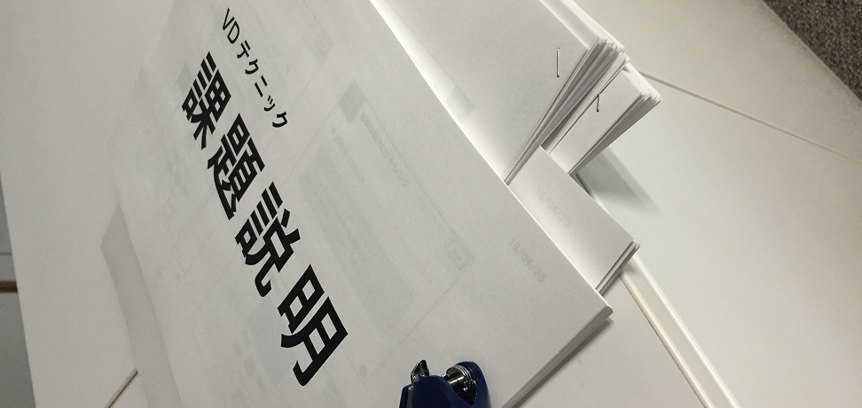
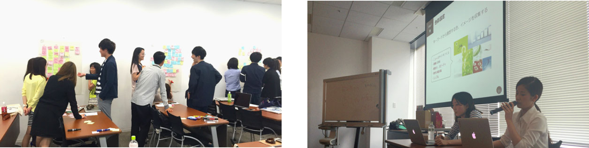

デザイナー新卒研修

- 概要
-
2016年度入社のデザイナーに向けた研修の企画・運営を担当。研修内容の設計、資料作成、講義講師、研修実施メンバーのリソース管理などを行った。
また、研修内容の周知を目的とした全社イベントの実施や、社外に向けて研修運営の取り組みを発信する広報記事の作成も担当した。
- 担当：制作，企画，運用
- 環境：Photoshop/ Illustrator/ PowerPoint
- 期間：2015年 12月 - 2016年 9月
- メンバー：8人
- URL：https://yj-creative.tumblr.com/post/150661863627/
- 作業内容
- 研修運営として、研修内容の立案、メンバーのリソース管理、講義講師・進行を担当。ビジュアルデザインに関する研修プログラムを中心に実施し、制作物や講義資料のレビュー、新卒メンバーのメンタルケアなども行った。
- 実施した研修内容
◯Photoshop / Illustratorの基礎
講義や課題に備えてもらうため、Photoshop / Illustratorの基本機能や操作方法をまとめた資料を作成・配布した。各ツールの中でも、業務で使用するうえで覚えておいてほしい内容を中心に整理した。
◯ビジュアルコンセプト作成講義
ビジュアルデザインを業務として行う際の心構えや、コンセプトの立て方について座学を実施した。講義内では、1年目同士でのグループワークや個人作業を通して、実際にコンセプトを作成する手順を学べる内容とした。
◯バナー制作課題
デザインコンセプトを立てたうえで、バナー制作を行う課題を実施した。必要な素材を提供し、各自で創意工夫しながら制作してもらった。完成したバナーに対しては、2年目のデザイナーがフィードバックを行い、1年目はその内容をもとに磨き込みを行った。
◯配色・フォント・文字詰めなどのVD基礎技術講義
ビジュアル制作に必要な基礎技術を学ぶための講義を実施した。配色、フォント選定、文字詰めなどを扱い、座学とワークショップの二部構成で進行した。講義内では一つのクリエイティブを制作し、その後、1年目同士でフィードバックを行った。
◯VD最終課題
これまでの講義や課題で学んだ内容を活かし、LPのファーストビューに掲載するクリエイティブを制作する最終課題を実施した。掲載文言や制作時の制約を設定し、実際の業務に近い環境で取り組める内容とした。
